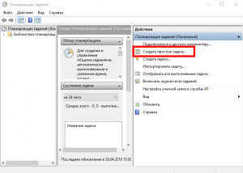
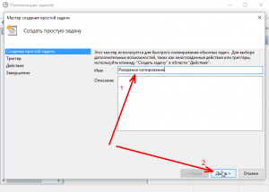
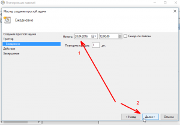
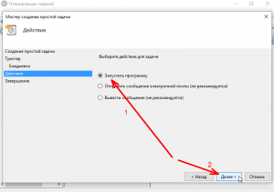
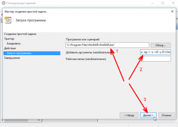
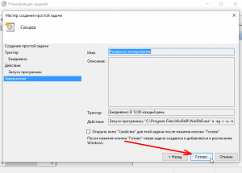

WinRAR: настройка автоматического резервного копирования
В настоящее время существует множество уже готовых решений для резервного копирования (англ. backup copy) информации, но не многим известно, что систему резервного копирования данных можно организовать и с помощью обычного архиватора, например, такого как WinRAR, а штатный «Планировщик заданий» Windows поможет этот процесс автоматизировать.
Настройка резервного копирования с помощью WinRAR
- Для начала выберем папку для хранения файлов, например, D:\AlpineFile. Копию содержимого этого каталога мы и будем дальше архивировать;
- Далее, в зависимости от того, где вы планируете хранить резервные копии, создадим папку «backup», к примеру, в облачном хранилище OneDrive (путь по умолчанию C:\Users\Имя_Пользователя_заменить_на_своё\OneDrive\backup, в нашем примере он отличается от стандартного: D:\OneDrive\backup\), или на флешке (E:\backup);
- На рабочем столе создадим ярлык программы ВинРАР: открываем C:\Program Files\WinRAR\ → клик правой кнопкой мыши (ПКМ) по WinRAR.exe → в контекстном меню проводника жмём «Отправить» → Рабочий стол (создать ярлык);
- ПКМ по ярлыку ВинРАРа на рабочем столе → Свойства → дополняем поле «Объект» следующей конструкцией: a -ag -r -u -rr8 -y D:\OneDrive\backup\rar D:\AlpineFile*.*

- a – это команда добавляет файлы в архив;
- -ag – добавляет к имени дату создания архива;
- -r – ключ, задающий архивацию всех папок, вложенных в исходный каталог;
- -u – задаёт режим обновления;
- -rr8 – ключ, генерирующий служебные записи, необходимые для восстановления (длина записи – 8 секторов);
- -у – определяет автоматическое подтверждение всех запросов, возникающих в ходе работы;
- D:\OneDrive\backup\rar – здесь будет храниться копия всего содержимого папки D:\AlpineFile, при этом архив с именем backup.rar будет создаваться автоматически;
- D:\AlpineFile – собственно архивируемая папка;
- *.* – сочетание этих подстановочных символов определяет, что архивируются все файлы, имеющие любые имена и расширения;
Поэтому, если, к примеру, резервные копии будем хранить на флешке или съёмном жёстком диске, то конструкция примет уже другой вид: a -ag -r -u -rr8 -y E:\backup\backup.rar D:\AlpineFile*.* и так далее, т.е. пути, прописанные в нашем примере под пунктами 7 и 8 у каждого будут свои!!!
Для удобства ярлык программы можно переименовать, например, в «Резервное копирование», так, каждый раз, нажимая на созданный нами ярлык WinRAR с особыми параметрами мы будем инициировать создание резервной копии вручную.
Дальше поговорим о том, как этот процесс автоматизировать.
Настройка параметров для автоматического копирования по расписанию
- Открываем планировщик: Панель управления → Система и безопасность → Администрирование → Расписание выполнения задач;
- Создать простую задачу;

- Имя, например, «Резервное копирование» → «Далее»;

- Устанавливаем триггер – когда вы хотите запускать задачу (ежедневно, еженедельно и т.д) → «Далее»;

- Определяем время запуска;


- В поле «Программа или сценарий» вводим путь: C:\Program Files\WinRAR\WinRAR.exe обязательно в кавычках (как на скриншоте), а в поле «Добавить аргументы» помещаем нашу конструкцию: a -ag -r -u -rr8 -y D:\OneDrive\backup\backup.rar D:\AlpineFile*.*


На этом всё, теперь в заданное время резервные копии выбранной папки будут автоматически создаваться на съёмном носителе (флешке) или в облаке.
По аналогии подобным образом можно настроить и автоматизировать и другие операции с помощью WinRar (подробная информация доступна в меню программы: Справка → Содержание → Режим командной строки).
Последнюю версию архиватора WinRAR на русском языке для Windows (32 и 64-бит) можно скачать на этой странице.


{kind=link}
{kind=link}
{kind=link}
{kind=link}
{kind=link}
{kind=link}